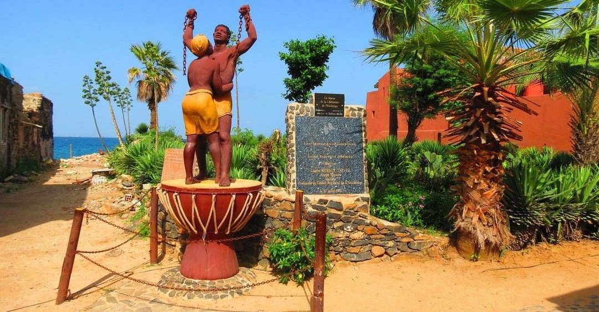

L'Île de Gorée


Le Sénégal est un pays fabuleux avec des paysages, une faune et une culture remarquables. Si vous avez la chance de découvrir ce pays, vous en prendrez certainement plein les yeux. Pour comprendre davantage l’histoire du pays et sa culture, rendez-vous sur l’île de Gorée, l’une des 19 communes de l’arrondissement de Dakar.
Son nom vous dit peut-être quelque chose… et il ne vous évoque sûrement pas de belles choses ! En effet, cette île reste aujourd’hui encore le symbole d’une triste histoire : celle de l’exploitation humaine et de l’esclavage.
Découverte en 1444 par des marins portugais sous le commandement de Dinis Dias, l’île fut baptisée “Palma” mais elle est également nommée “Beseguiche” dans des documents d’époque, alors que les populations locales l’appelaient “Bir” ou “Ber“.
La marine hollandaise s’en saisit en 1588 qui la rebaptisa ”Goede reede” (= bonne rade) d’où son nom de Gorée...
Un lieu chargé d'émotions
Lorsque le soleil brille, cette île peut sembler paradisiaque avec ses eaux bleu turquoise et ses maisons colorées. Pourtant, ce n’est pas pour sa beauté que Gorée a été classée au patrimoine mondial de l’UNESCO en 1978. C’est le symbole de la traite négrière qui s’est converti en havre de paix qui a été reconnu par la fameuse agence spécialisée de l’ONU. En effet, il est important que l’île de Gorée soit conservée comme telle. Malgré l’horreur qui s’y est passée, elle a marqué l’histoire de l’humanité. Selon de nombreux historiens, entre 900 et 15000 esclaves auraient été déportés de 1726 à 1755 sur cette île, puis enfermés dans la Maison des Esclaves de Gorée. Aujourd’hui, ce bâtiment se visite en mémoire de ces milliers d’humains.
Un sanctuaire pour la réconciliation
Même si cette île a longtemps accueilli de la souffrance, des larmes et des morts, elle est désormais devenue un mémorial. On peut considérer Gorée comme un musée à ciel ouvert qui reste le témoin d’un triste passé, mais aussi d’un avenir plus chaleureux. En effet, aujourd’hui de nombreux visiteurs du monde entier viennent s’y recueillir. Il s’agit désormais d’un lieu de dialogue des cultures, ce qui permet d’atteindre la réconciliation et le pardon.
Une île-mémoire à visiter à tout prix !
Si vous vous rendez à Gorée, profitez-en pour vous ressourcer dans le calme. En effet, les voitures n’y circulent pas et il y a beaucoup moins de bruit que dans la capitale. Nous vous conseillons de dédier au moins une journée entière à la visite de cette île. Vous pourrez ainsi découvrir la totalité de l’île, ses monuments et son histoire.
Les incontournables de cette île sont bien évidemment la maison des esclaves de Gorée, mais aussi musée historique du Sénégal. S’il vous reste du temps après avoir découvert les ruelles de Gorée et ces deux musées, vous pourrez visiter le musée de la mer ou encore le musée de la femme. Pour ne rien rater de cette île unique, il est préférable de prendre un guide local. Ainsi, celui-ci vous expliquera toute l’histoire de Gorée, mais aussi de l’esclavage. Il serait dommage de visiter un tel lieu et de rater des détails importants.
Pour une expérience encore plus belle, n’hésitez pas à rester une nuit à Gorée. Peu de touristes choisissent cette option. Pourtant, elle permet de découvrir l’île quasiment vide et de ressentir encore plus d’émotions. Et avec un peu de chance, vous pourrez profiter d’un coucher de soleil unique.

Nous vous souhaitons une bonne découverte de l'Ile!